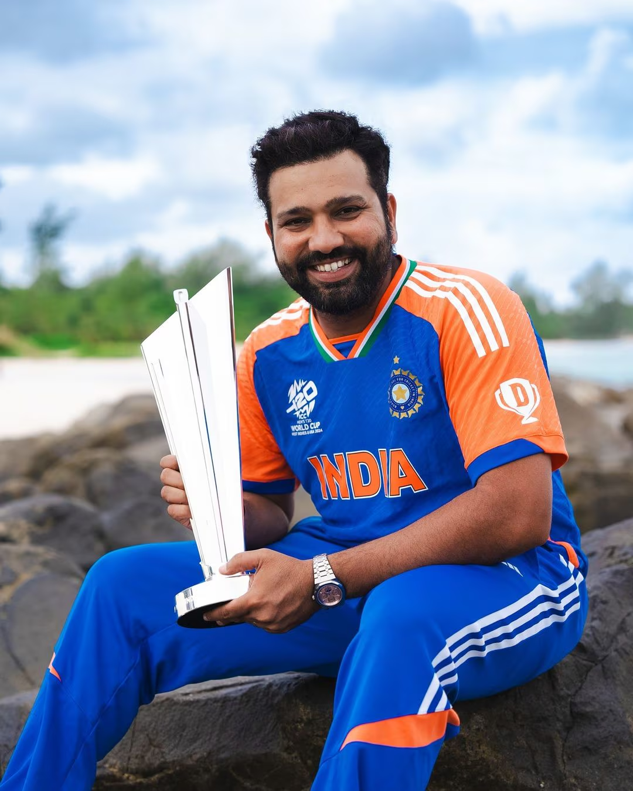
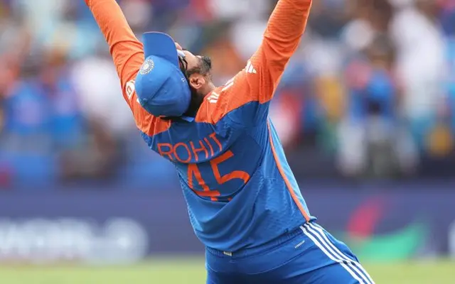
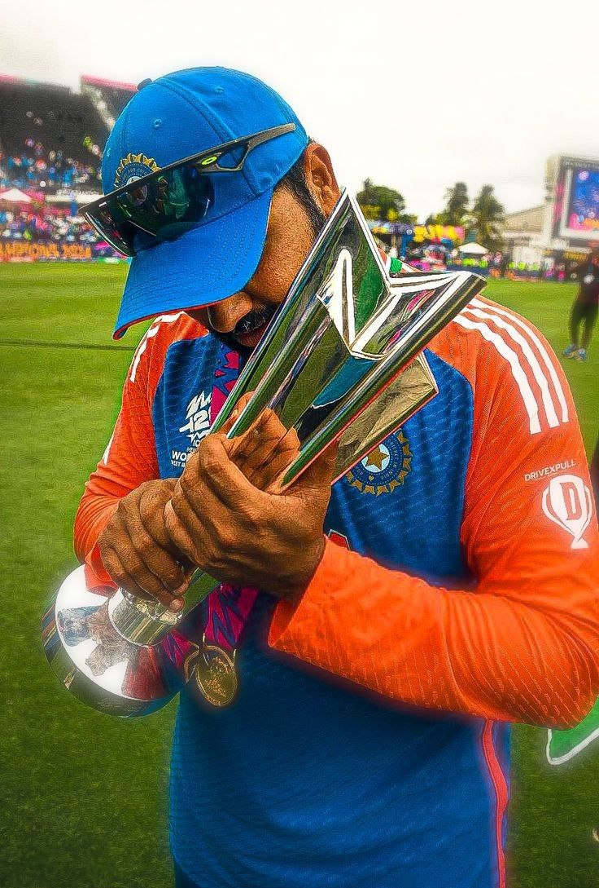
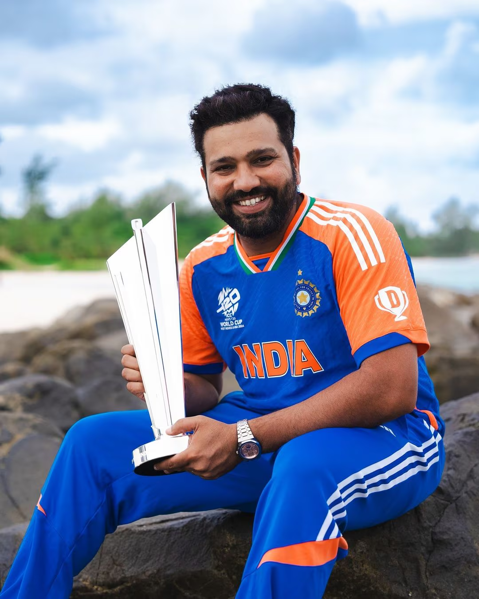
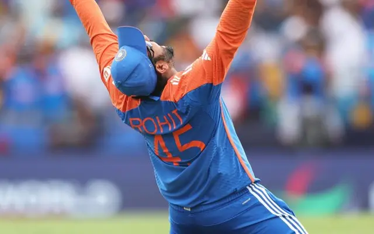
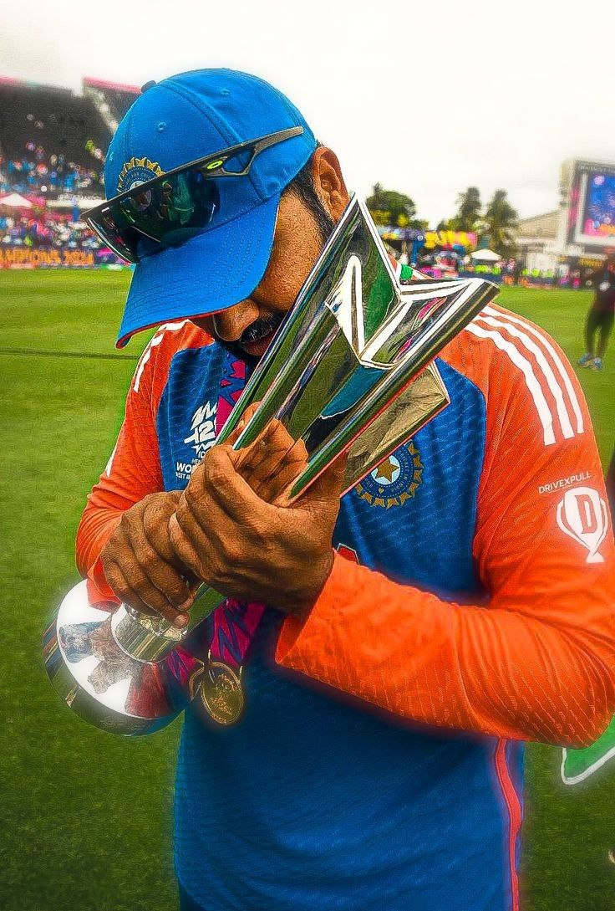

Rohit Sharma is an Indian cricketer who has played in every T20 World Cup since the first in 2007. He is the only Indian to win two T20 World Cups and the second Indian captain to win one.
 





STATS
| Date | Opponent | Venue | Runs | Balls | 4s | 6s | Strike Rate |
|---|---|---|---|---|---|---|---|
| Jun 5, 2024 | Ireland | Nassau County International Cricket Stadium, New York | 52* | 37 | 4 | 3 | 140.54 |
| Jun 9, 2024 | Pakistan | Nassau County International Cricket Stadium, New York | 13 | 12 | 1 | 1 | 108.33 |
| Jun 12, 2024 | USA | Nassau County International Cricket Stadium, New York | 3 | 6 | 0 | 0 | 50 |
| Jun 15, 2024 | Canada | Central Broward Regional Park | - | - | - | - | - |
| Jun 20, 2024 | Afghanistan | Kensington Oval, Bridgetown, Barbados | 8 | 13 | 1 | 0 | 61.54 |
| Jun 22, 2024 | Bangladesh | Sir Vivian Richards Stadium, North Sound, Antigua | 23 | 11 | 3 | 1 | 209.09 |
| Jun 24, 2024 | Australia | Daren Sammy National Cricket Stadium, Gros Islet | 92 | 41 | 7 | 8 | 224.39 |
| Jun 27, 2024 | England | Providence Stadium, Guyana | 57 | 39 | 6 | 2 | 148.15 |
| Jun 29, 2024 | South Africa | Kensington Oval, Bridgetown, Barbados | 9 | 5 | 2 | 0 | 180.00 |
In total, Rohit Sharma scored 257 runs in the tournament. His highest score was 92 runs off 41 balls against Australia, where he struck 7 fours and 8 sixes.